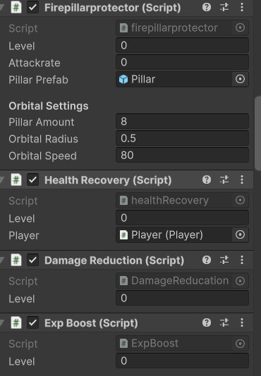
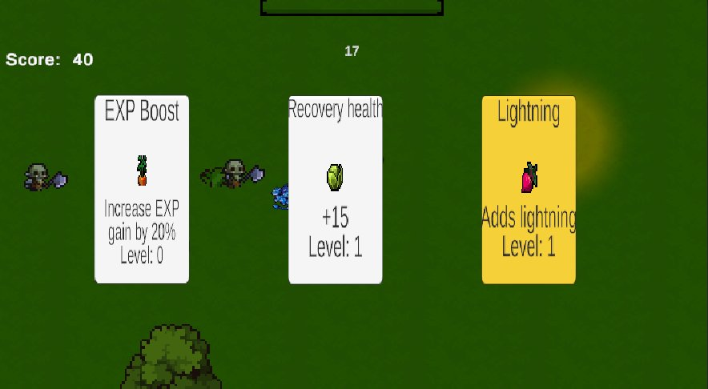

These are my own weekly Scrum reports for Cycle 2. My part of the eight-person team's workload was the charm/skill system: coming up with what each charm should do, then implementing it in C# and wiring it into the shop and currency systems.
Week 11 — Currency and the First Charms
This week's work: implementing the first playable charms (Fire Wall, Happiness, Speed-boost, 3–4 hrs), upgrading the shop system (2–3 hrs, including a first attempt at a skip button and shop-cost tuning), and adding a currency system based on the player's existing EXP value (2–3 hrs) — effectively minting a spendable coin out of a stat the game already tracked.

Week 12 — Integrating Charms with the Shop
This week's focus shifted to integration: connecting the charm-item system to the shop system (3–4 hrs) and implementing a more general charm feature covering speed-up, recovery, and damage-up items (5–6 hrs), plus continued shop-cost tuning and another pass at the skip button.

Week 13 — Expanding the Charm Roster
By Week 13 the charm system had grown into several distinct, individually scripted effects: Fire Pillar (creates pillars orbiting the player), Health Recovery (recovers player HP), Damage Reduction (reduces damage taken), and EXP Booster (increases EXP gained per kill) — roughly 8–10 hrs of work changing the underlying code structure to support this many simultaneous effects cleanly.

Firepillarprotector, healthRecovery, DamageReducation, ExpBoost) with a shared Level field so charms can scale as the player collects duplicates.


Takeaway
Structuring every charm as its own small script with a common Level field turned out to be the decision that made Week 13's roster expansion cheap: adding Fire Pillar, Health Recovery, Damage Reduction, and EXP Booster in one sprint was possible because each one only had to implement its own effect, not a shared monolithic “charm manager.” The same pattern is what let the level-up screen and shop absorb new charms (like Lightning) without any changes to the UI code itself.